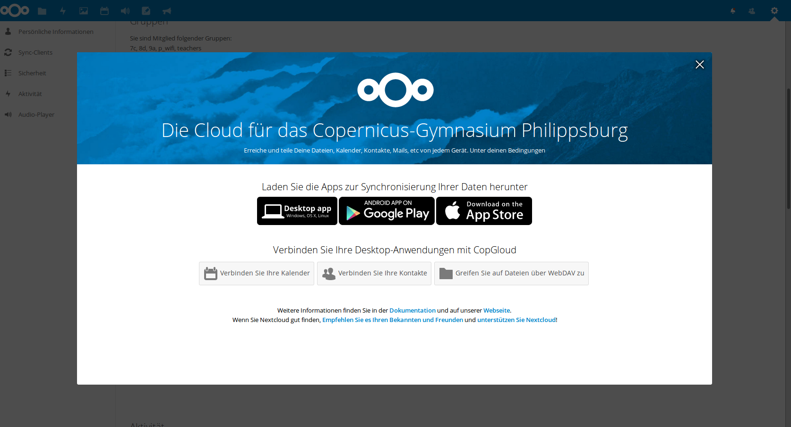
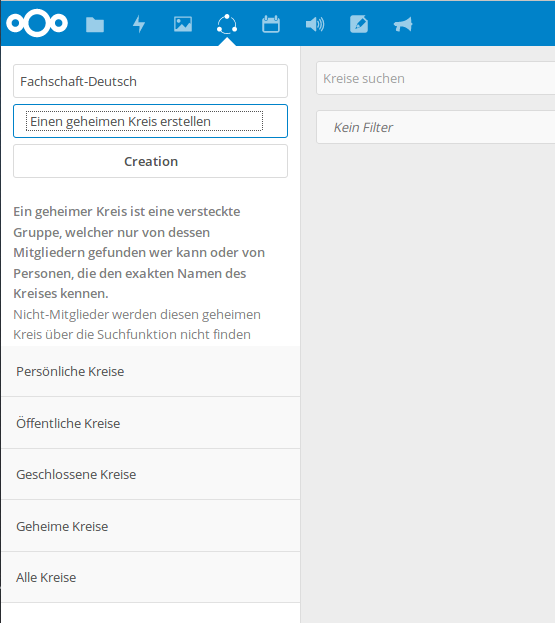
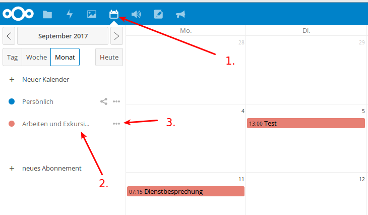

CopGym-Cloud [1]¶
Seit einiger Zeit verfügen wir über einen eigenen Nextcloud-Server, sodass wir ab jetzt die Vorteile einer Cloud ohne datenschutzrechtliche Bedenken nutzen können. Wenn Sie bereits mit Dropbox, Onedrive, Icloud, GoogleDrive o.ä arbeiten, sind Ihnen die Vorteile einer Cloud sicherlich bekannt.
Vorteile der Cloud¶
- einfaches Synchronisieren von Dateien zwischen Laptop, Handy und dem PC an der Schule (via Browser) und damit problemloser „Transport“ von Dateien.
- Einfaches Teilen von Dateien mit Kollegen, Klassen, Kursen
- Kalenderfunktion
- Notizfunktion
- Onlinebearbeitung von Dokumenten
Zugriff auf die Cloud¶
Zugriff auf die Cloud¶
Zugriff auf die Cloud im Browser erhalten Sie, indem sie auf der Startseite der schuleigenen Homepage auf den Link „copbox“ klicken oder im Browser direkt folgende URL eingeben: https://owncloud.copernicus-gymnasium.de/owncloud
Dort können Sie sich mit ihren Accountdaten anmelden.
Desktop-Client¶
Wie für die herkömmlichen Cloudlösungen auch, existiert auch für Nextcloud ein Programm, mit dem Sie die Cloud auf Ihrem Rechner wie einen normalen Ordner in ihr System integrieren können. Nach der ersten Anmeldung an der Cloud im Browser erscheint ein Pop-up-Fenster, das Ihnen das Herunterladen eines Clients für ihr Betriebsystem anbietet. Haben Sie das Fenster zugemacht und wollen nun aber erneut die Links zu dem Download der Clients sehen, klicken Sie auf der Startseite von Owncloud auf ihren Namen (oben rechts) und wählen Sie den Bereich „Persönlich”.


Hier können Sie ihren persönlichen Cloud-Account konfigurieren und zum Beispiel ein Benutzerfoto hochladen. Wenn Sie etwas nach unten scrollen, werden Sie drei Schaltflächen sehen, die sie zum Download der Desktop-Clients führen.

Hier können Sie die Version des Clients wählen und im Anschluss herunterladen, die ihrem Betriebssystem entspricht. Blau hinterlegt ist der Button für das Betriebsystem, das Sie im Moment verwenden. Die Installation gestaltet sich recht einfach. Sie müssen nach der Installation nur die URL der Cloud eintragen https://owncloud.copernicus-gymnasium.de/owncloud und ihre Zugangsdaten angeben.
Wichtig
Bitte beachten Sie: Wenn Sie das Passwort ihres Zugangs einmal ändern, müssen Sie das neue Passwort im Nextcloud-Programm auf ihrem Rechner natürlich auch entsprechend neu angeben.
Der Inhalt ihres Cloudverzeichnisses auf dem Cloudserver in der Schule wird nach erfolgreichem Verbindungsaufbau direkt auf ihrem Rechner eingebunden.
Mobile Geräte (Android, iOS etc.)¶
Auch für mobile Geräte gibt es Programme, mit denen Sie auf den Inhalt ihres Cloudverzeichnisses zugreifen können. Sie finden diese im Appstore ihres mobilen Gerätes. Der Nextlcoud-Client für Android kostet allerdings so circa einen Euro. Ein kleiner Preis verglichen mit den Vorteilen, die Nextcloud bietet. Das Geld geht an die Entwickler des Projekts. Die Einrichtung eines mobilen Clients geschieht analog zu dem der Desktop-Variante.
Umgang mit der Cloud¶
Da vielen Kollegen die Arbeitsweise mit der Cloud noch fremd ist und sie auch noch nicht alle Möglichkeiten unserer Cloud entdeckt haben, erklären die folgenden Abschnitte das Arbeiten mit der Cloud.
Die Startseite¶
Nach der erfolgreichen Anmeldung im Browser gelangen sie zur Startseite der Cloud. Hier sehen sie ihr Cloudverzeichnis und die darin enthaltenen Dateien und Ordner.

Den meisten Platz nimmt die Übersicht über die Ordner und Dateien, die sich in ihrem Cloudverzeichnis befinden (1.). Weiterhin sehen sie am linken Rand einen Bereich, der Ihnen bei Bedarf genauere Informationen über die von oder mit Ihnen geteilten Dateien bietet (2.). Links oben neben der Wolke befindet sich ein Feld, das den etwas irreführenden Namen “Dateien” trägt (3.). Wenn Sie darauf klicken, erscheint ein weiteres Feld mit Anwendungsmöglichkeiten, sogenannten “Apps”, die Ihnen die Cloud bietet:

Sie sehen folgende Bereiche:
- “Dateien”: bringt Sie zurück zur Übersicht ihrer Dateien und Ordner
- “Aktivität”: hier finden sie Informationen über die mit oder von Ihnen geteilten Dateien und wer, wann, was damit gemacht hat.
- “Dokumente”: dahinter verbirgt sich ein kleiner Texteditor mit zahlreichen Formatierungsmöglichekiten, mit dem Sie Textdateien direkt in der Cloud erstellen oder bearbeiten können.
- “Galerie”: eine Sammlung aller Bilder, die sie auf der Cloud gespeichert haben.
- “Kontakte”: Hier können Sie Kontakte eintragen und verwalten. Diesen Bereich können Sie auch mit ihrem Smartphone oder ihrem Emailprogramm auf dem heimischen PC synchronisieren.
- “Kalender”: wie der Name schon sagt, können Sie hier einen Kalender führen, andere Kalender einbinden, diese Kalender mit anderen teilen oder mit den Geräte zuhause synchronisieren.
- “Lesezeichen”: Eine Möglichkeit Booksmarks von interessanten Webseiten zu speichern. diese Bookmarks können Sie ebenfalls teilen, syncen etc.
Genaueres zu diesen “Apps” finden sie hier Die verschiedenen Apps
Oben rechts auf der Startseite können Sie nach einem Klick auf die Lupe nach Dateien suchen. Rechts daneben sehen Sie eine Schaltfläche mit einem Kreis, der Sie zu den Einstellungen ihres Nutzerprofils führt (4.)
Arbeiten mit der Cloud¶
Dateien hoch- und herunterladen¶
Der grundlegende Vorteil einer Cloud besteht natürlich darin, dass Sie von überall und mit (fast) allen Geräten auf die Dateien in der Cloud zugreifen können. Dazu müssen die Dateien erst einmal in die Cloud geladen werden. Das kann auf zwei Wegen erfolgen.
1. Dateien mittels eines Desktop-Clients ( Windows, Mac oder Linux) oder einer App (IOs, Android) hochladen¶
Wenn Sie Nextcloud-Client auf ihrem Rechner installiert haben (dazu siehe Desktop-Client) und diesen bei der Ersteinrichung mit der Cloud verbunden haben, wird im Dateisystem ihres Computers ein Ordner erstellt, die direkt mit der Cloud verbunden ist (natürlich nur, solange eine Internetverbindung besteht). Dieser Ordner verhält sich wie jeder andere Ordner auf ihrem PC auch. Dateien und Ordner, die Sie in diesen Cloudordner kopieren, werden sofort in die Cloud hochgeladen. Dateien, die mit Ihnen geteilt werden, werden automatisch in diesen Ordner heruntergeladen. Das ist mit Sicherheit die komfortabelste Methode, um mit der Cloud zu arbeiten. Hinzu kommt außerdem, dass die Daten nun auf ihrem Rechner und in der Cloud vorhanden sind. D.h. sollte, der Cloudserver nicht erreichbar sein oder die Daten dort verschwunden sein, verfügen Sie weiterhin über die Daten, da sie sich ja nun auch auf ihrem Rechner befinden. Den Nextcloud-Client gibt es auch für Android- und IOsgeräte, ja wahrscheinlich sogar für Windows-Smartphones. Wollen Sie also Dateien von ihrem Tablet oder Smartphone in die Cloud bringen oder umgekehrt, empfiehlt sich der Download der Owncloud-App im Appstore ihres Smartphones. Siehe dazu auch: Mobile Geräte (Android, iOS etc.)
Wichtig
Die Verwendung des Nextcloud-Clients ist die beste Art, mit der Cloud zu arbeiten.
2. Dateien mit dem Browser hoch- und herunterladen.¶
Die Cloud bietet Ihnen die Möglichkeit, von überall auf ihre Daten zuzugreifen. Sie benötigen nur eine Internetverbindung und einen Browser. Wie Sie per Browser auf die Cloud des Copernicus-Gymnasiums zugreifen, wurde bereits weiter oben erklärt (siehe Abschnitt Zugriff auf die Cloud) Um im Browser Dateien in die Cloud zu laden, gehen Sie folgendermaßen vor:
- Klicken sie einmal auf das Plus unterhalb des blauen Balkens
- Klicken Sie einmal auf “Hochladen”

- Wählen Sie in dem sich öffnenden Fenster die Datei(en) aus, die sie hochladen möchten (Sie können auch mehrere Dateien im selben Ordner auf einmal auswählen, indem Sie die “Shift-Taste” gedrückt halten und mit den Pfeiltasten die entsprechenden Dateien auswählen).
- Klicken Sie anschließend auf “öffnen”.
- Sie sehen nun einen blauen Balken, der den Fortschritt des Uploads anzeigt. Je nach Größe der Datei(en) kann der Upload eine Weile dauern. Haben Sie Geduld.

- Sie können auch einfach Dateien per “Drag&Drop” vom PC in das Browserfenster ziehen, um Dateien in die Cloud hochzuladen.

Mehrere Dateien und Ordner auswählen¶
Um den workflow zu verbessern können, Sie auch mit mehreren Dateien gleichzeitig arbeiten.
- Bewegen Sie die Maus über die Dateien. Die ganze Zeile in der Übersicht erscheint nur leicht eingegraut.

- Sie werden feststellen, dass sich die Anzeige des Icons verändert hat und nun am rechten Rand der Datei oder des Ordners ein kleines leeres Kästchen zu sehen ist.
- Klicken Sie in dieses Kästchen und es wird mit einem Haken markiert.
- Über der Liste mit Dateien wird nun angezeigt, was Sie alles markiert haben. Dort ist auch ein weiteres leeres Kästchen zu sehen. Wenn Sie dieses anklicken, werden automatisch alle Dateien und Ordner in der Übersicht markiert. So lassen sich viele Dateien auf einmal herunterladen oder teilen.
Erstellen von Dateien und Ordnern in der Cloud¶
Sie können Ordner und Dateien (Textdateien) auch direkt in der Cloud erstellen und bearbeiten (Genaueres zum Bearbeiten von Textdateien finden Sie im Abschnitt “Dokumente”)
- Klicken Sie auf das + Symbol.
- Klicken Sie auf “Ordner” oder “Textdatei”.
- Geben Sie den Namen des Ordners oder der Textdatei an.
Der neu erstellte Ordner oder die angelegte Datei erscheint kurz darauf in der Übersicht ihrer Dateien. Möchten Sie eine Datei in einem bestimmten Ordner verschieben, können Sie das per Drag&Drop erledigen.
Gelöschte Dateien¶
Sollten Sie einmal versehentlich Dateien aus der Cloud gelöscht haben, so lassen sich diese ganz einfach wiederherstellen.
- Im Startfenster der Owncloud sehen Sie links unten eine Schaltfläche “Gelöschte Dateien”.

- Klicken Sie darauf, um sich eine Liste mit den von Ihnen gelöschten Dateien und Ordnern anzeigen zu lassen.
- Klicken Sie auf die Schaltfläche “Wiederherstellen”, um die Datei oder den Ordner wiederherzustellen.

Die Datei bzw. der Ordner befindet sich kurz darauf wieder unter ihren Dateien. Mit einem Klick auf Haussymbol (oben, Mitte links) oder auf die Schaltfläche “Alle Dateien” gelangen Sie wieder zur Startseite zurück.

Die verschiedenen Apps¶
“Dateien”¶
Ein Klick auf dieses Symbol bringt Sie wieder zurück zur Startseite, wo Sie ihre gespeicherten Dateien und Ordner finden. Zur Arbeitsweise mit Dateien und Ordnern siehe Arbeiten mit der Cloud
“Aktivität”¶
“Dokumente”¶
“Galerie”¶
“Kontakte”¶
“Kalender”¶
Die Cloud verfügt über eine Kalender-App, mit dem man alle möglichen Termine verwalten kann. So könnten Sie zum Beispiel einen Terminkalender für Ihre eigene Klasse einrichten oder den “Klausuren- und Exkurisionenkalender” verwenden. Selbstverständlich können hier angelegte Kalender auch in beliebige Programme (Outlook, Thunderbird etc.) integrieren und mit diesen Programmen den Kalender sehr bequem bearbeiten. Natürlich können Sie mit dem Kalender auch in der Webansicht arbeiten. Im folgenden werden einige der Features erklärt (“Klausuren- und Exkursionenkalender” sowie die Einbindung eines Cloud-Kalenders in ein Email-Programm (hier Thunderbird). Zur Kalender-App gelangen Sie, indem Sie sich über den Link auf der Homepage an der Cloud anmelden. Siehe dazu den folgende Link ( Zugriff auf die Cloud )
Cloud-Kalender in Thunderbird importieren¶
- Auf der Startseite der Cloud auf Kalendericon klicken. (1.)

- Nun auf der linken Seite auf “Arbeiten und Exkursionen klicken. (2.)
- Jetzt neben “Arbeiten und Exkursionen” auf die drei Punkte klicken. (3.)
- Als nächstes auf “Link” klicken. (4.)

5.Den erscheinenden Link markieren und kopieren. (5.)
Jetzt öffnen Sie bitte auf Ihrem Rechner Thunderbird und gehen zur Kalenderansicht: “Termine und Aufgabe” -> Kalender.
- In der Spalte Kalender rechtsklicken und “Neuer Kalender” auswählen (6.)

- Hier als Ort des Kalenders “Im Netzwerk” auswählen und “Weiter” klicken. (7.)

- Im folgenden Fenster als Format “CalDAV” auswählen. (8.)
- Bei “Adresse” den vorhin kopierten Link aus der Cloud einfügen (9.) und auf “Weiter” klicken.

10. Einen aussagekräftigen Namen überlegen und eintippen. Dieser wird nur Ihnen in der Kalenderleiste von Thunderbird angezeigt. (10.) Wählen Sie Farbe aus, um die Termine dieses Kalender von anderen evt. eingerichteten gut unterscheiden zu können.(11.) Geben Sie nun eine Emailadresse auswählen, unter der sie benachrichtigt werden möchten ( z. B. ihre Dienstemailadresse wäre möglich, wenn diese in Thunderbird eingerichtet ist.) (12.) Dann auf “Weiter” klicken.
10. Im darauf folgenden Fenster sollte jetzt die Meldung “Ihr Kalender wurde erstellt” erscheinen. Wenn ja, auf “Fertigstellen” klicken. (13.)

Wichtig
Sie werden nun aufgefordert, einmalig ihre Anmeldedaten für die Cloud einzugeben. Zum Abschließen auf “Fertigstellen” klicken.
12. Der neu angelegte Kalender erscheint nun links in der Leiste “Kalender”. Termine dieses Kalender erscheinen in der von Ihnen ausgewählten Farbe. Diese können Sie nach Belieben ändern, indem Sie nach einem Rechtsklick auf den Namen des Kalenders in der Kalenderleiste auf Eigenschaften klicken. Im aufgehenden Fenster lassen sich nun neben der Farbe auch die Emailadresse und der Zeitintervall, wie oft der Kalender aktualisiert werden soll, einstellen.
Arbeiten mit einem Kalender in einem Email-Programm (Hier am Beispiel Thunderbird)¶
- Im Kalenderfenster von Thunderbird (Termine und Aufgaben -> Kalender) Doppelklick in ein Feld.

Im nun erscheinenden Fenster können die Parameter ihres Termins angeben: Titel des Termins (1.), Dauer des Termins (2.), ob sich der Termin wiederholen soll (3.), ob sie per Mail an den Termin erinnert werden wollen (4.), genauere Beschreibung des Termins (5.).
Wichtig
Bitte achten Sie darauf, dass Sie den anzulegenden Termin in den richtigen Kalender eintragen!!!!! (6.)
- Wenn Sie mit ihren Angaben zufrieden sind, klicken Sie auf “Speichern und schließen”. (7.)
3. Wenn Sie einen Termin in einen Kalender eingetragen haben, der sich irgendwo im Netz befindet (zum Beispiel ein Kalender in der Cloud), klicken Sie auf “Synchronisieren”, um den angelegten Termin mit dem entfernten Kalender sofort zu synchronisieren.

Eine Klassenarbeit oder eine Exkursion in den Kalender “Arbeiten u. Exkursionen” eintragen¶
Seit Schuljahresbeginn (2017/18) existiert für die Lehrer ein gemeinsamer Kalender in der Cloud, in den jeder seine Klassenarbeiten und Exkursionen eintragen kann. Ziel dieses Kalenders ist es, den z.T. unübersichtlichen Plan, in den jeder handschriflich seine Arbeiten eingetragen hat, zu ersetzen. Der Vorteil liegt auf der Hand: Man kann in Ruhe zu Hause seine Klassenarbeit planen und eintragen, da der Kalender rund um die Uhr auch von zu Hause (oder von anderswo) aus erreichbar ist. Man kann diesen Kalender bequem in ein Email-Programm mit Kalenderfunktion einbinden (Thunderbird, Outlook, Apple-Variante) oder auch in eine entsprechende App einbinden, um den Kalender auch auf mobilen Geräten verfügbar zu machen. Wie man einen Termin in einem Email-Prgramm anlegt hat das vorige Kapitel beschrieben (Für Outlook und andere gilt ein ähnliches Vorgehen). Dieses Kapitel beschreibt, wie man eine Klassenarbeit oder eine Exkursion in diesen Kalender einträgt, wenn man den Kalender im Browser benutzt.
Wichtig
Allerdings sollten Sie folgende Punkte bedenken: 1. Der Netzwerkberater stellt die Funktionalität bereit und ist nicht für fehlerhafte oder nicht korrekt angelegte Einträge verantwortlich. Vergewissern Sie sich daher bitte immer,a) ob der Inhalt des Eintrags korrekt ist, b) der Eintrag in dem richtigen Kalender (“Arbeiten u. Exkursionen”) angelegt wurde und c), dass der Eintrag gespeichtert wurde. Bedenken Sie weiterhin, dass Sie die Einträge der Kollegen verändern und löschen können. Bitte vermeiden Sie dies unbedingt.
Wenn Sie nun also eine Klassenarbeit oder eine Exkursion in den gemeinsamen Kalender eintragen möchten und dabei die Webansicht des Kalender verwenden möchten, gehen bitte wie folgt vor:
- Zugriff auf die Cloud
- Klicken Sie Hauptfenster in der Leiste der Apps auf das Kalendersymbol

3. Sie werden zur Kalender-App weitergeleitet. Die meisten Platz auf dem Bildschirm nimmt die Kalenderübersicht ein. Ein Kästchen pro Tag. Links oben sehen sie den angezeigten Monat und das Jahr. Klicken Sie auf die Pfeile links oder rechts neben Anzeige von Monat und Jahr, um zum gewünschten Termin zu gelangen. Klicken Sie auf die Schaltflächen “Tag”, “Woche”, “Monat” oder “Heute”, um die Ansicht zu ändern. Die Übersicht rechts verändert sich entsprechend. Weiterhin sehen Sie links alle Kalender die sie angelegt haben, oder die mit Ihnen geteilt wurden. Das sind wahrscheinlich nur zwei. Ein blau markierter mit dem Namen “Persönlich” für ihre eigenen Termine und einen rot markierten darunter mit dem Namen “Arbeiten und Exkursionen”.

4. Um eine Klassenarbeit oder eine Exkursion in diesem Kalender einzutragen, doppelklicken Sie auf das gewünschte Datum in der Übersicht. Es öffnet sich ein Fenster, in das sie bitte den Namen des Eintrags eintragen (“Titel der Veranstaltung”) sowie die Dauer (die Uhrzeit).
Wichtig
Um die Übersichtlichkeit zu erhöhen und um für ein einheitliches Erscheinungsbild zu sorgen halten Sie sich bitte an folgende Schreibweise: Klasse,Fach,Lehrerkürzel. Zum Beispiel: 9d,D,Hu

Wichtig
Achten Sie darauf, dass Sie den richtigen Kalender ausgewählt haben. Klicken Sie auf das Dropdown-Menu und wählen Sie den Kalender “Arbeiten u. Exkursionen”.
Sind alle Angaben korrekt und der richtige Kalender ausgewählt, klicken Sie auf die Schaltfläche “Erstellen” unten rechts.
Wenn alles geklappt hat, erscheint der Termin in der Kalenderübersicht in roter Farbe! Der Termin ist nun für alle anderen Kollegen sichtbar.

“Lesezeichen”¶
“Ankündigungen”¶
Benutzerhandbuch¶
Weitere Informationen finden Sie im englischsprachigen Benutzerhandbuch von Nextcloud, das Sie unter folgender URL finden: https://docs.nextcloud.com/server/12/user_manual/
| [1] | Im Sommer 2017 haben wir eine technische Änderung vorgenommen und sind von Owncloud zu Nextcloud gewechselt. Zu erreichen ist die neue Cloud aber unter dem alten Namen https://owncloud.copernicus-gymnasium.de/owncloud. |